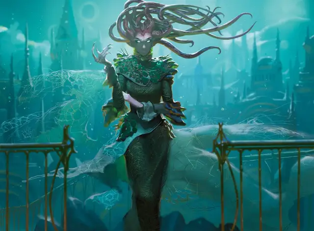

Подземная медуза
Undercity Medusa
Средний Монстр, нейтрально-злой

Класс Доспеха 16 (природный доспех)
Хиты 120 (16к8 + 48)
Скорость 30 футов
| мод | спас | ||
|---|---|---|---|
| СИЛ | 16 | +3 | +3 |
| ЛОВ | 18 | +4 | +4 |
| ТЕЛ | 16 | +3 | +3 |
| мод | спас | ||
|---|---|---|---|
| ИНТ | 17 | +3 | +3 |
| МДР | 12 | +1 | +1 |
| ХАР | 15 | +2 | +2 |
Навыки Восприятие +4, Обман +5, Проницательность +4, Скрытность +7
Чувства тёмное зрение 60 футов, пассивное Восприятие 14
Языки Общий, Эльфийский
Опасность 6 (2300 опыта)
Бонус мастерства +3
Особенности
Врожденное колдовство. Базовой характеристикой заклинаний медузы является Интеллект (Сл спасброска от заклинания 14). Она может накладывать некоторые заклинания, не нуждаясь в материальных компонентах:
• 1/день каждое: поспешное отступление [expeditious retreat], туманное облако [fog cloud], туманный шаг [misty step];
Сопротивление магии. Медуза совершает с преимуществом спасброски от заклинаний и других магических эффектов.
Внезапная атака. В течение первого раунда боя медуза совершает с преимуществом броски атаки против любого захваченного врасплох существа и дополнительно наносит 10 (3к6) урона каждый раз, когда попадает по такому существу своей атакой.
Действия
Мультиатака. Медуза совершает две атаки Когтями. Он также может использовать Окаменяющий взгляд до или после совершения этих атак.
Коготь. . Рукопашная атака оружием: +7 к попаданию, досягаемость 5 фт., одна цель. Попадание: 13 (2к8 + 4) рубящего урона.
Окаменяющий взгляд. Медуза устремляет свой взгляд на дистанции до 60 футов от себя на одно видимое ею существо, которое также может видеть ее глаза. Цель должна совершить спасбросок Телосложения Сл 14. При провале на 5 или более, существо мгновенно окаменевает. В противном случае существо, провалившее спасбросок, начинает превращаться в камень и становится опутанным. Опутанное существо должно повторить спасбросок в конце своего следующего хода, превращаясь в камень при провале или заканчивая эффект при успехе. Окаменение длится до тех пор, пока существо не будет высвобождено заклинанием высшее восстановление [greater restoration] или подобной магией.
Описание
Медузы Равники, часто называемые горгонами, представляют собой чудовищную расу существ, внешне похожих на женщин человеческой расы. Вместо волос у горгоны извивающаяся масса черных змеевидных щупалец, а ее руки представляют собой чешуйчатые когти.
Взгляд светящихся глаз медузы заставляет живую ткань окаменевать. Трансформация происходит быстро, оставляя жертву каменной статуей, обычно застывшей в состоянии в позе страха или агонии — прекрасный трофей для жуткой коллекции медузы. Медуза использует свою волю, чтобы осуществить эту трансформацию, поэтому взгляд удивленной или дружелюбной медузы из Равники безвреден.
Эта смертоносная атака взглядом дает медузам степень силы среди Голгари, которая несоизмерима с их небольшим числом. Медузы контролируют значительную часть небольших ячеек гильдии в Равнике, и считается, что по крайней мере одна медуза в данный момент борется за контроль над всей гильдией.
Не все горгоны так амбициозны; некоторые предпочитают просто бродить по бесконечным теням подземного города, словно голодные хищники.
ЛЮДМИЛЛА, ТУННЕЛЬНАЯ змея
Людмила - последний выживший член Сестер Каменной Смерти, трио жаждущих власти медуз, которые убили Свогтира, изначального гильдмастера Роя Голгари. У Людмилы больше нет могущества сестёр-медуз, поэтому она вынуждена скрываться в подземельях Равники, окруженная сотнями своих окаменевших жертв. Она мечтает однажды вернуть себе контроль над Роем Голгари или хотя бы причинить боль его нынешнему гильдмастеру Джараду Вод Саво (чья сестра вытеснила медуз с их позиций).